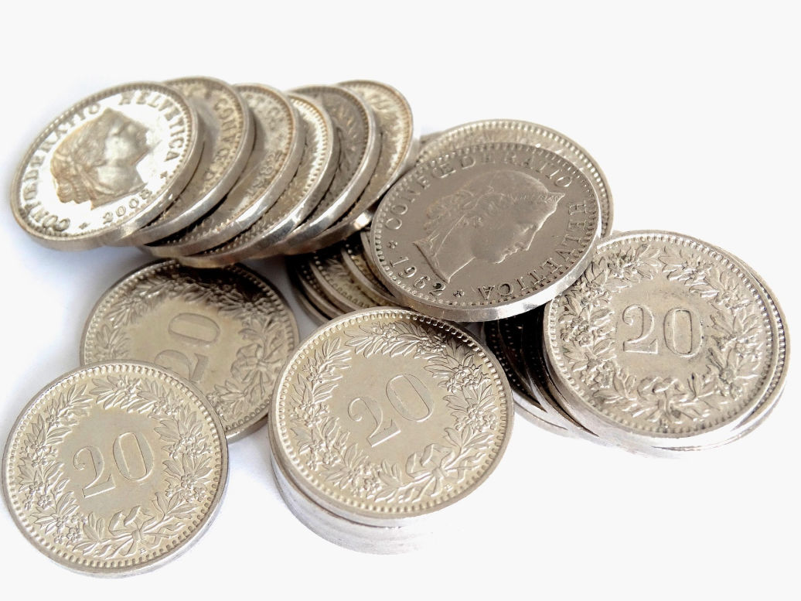

📅 2026年6月
2026年上半年，香港銀行同業拆息（HIBOR）持續波動，1個月HIBOR由年初的2.8厘一度升至4.2厘，其後回落至3.5厘水平。受美國聯儲局減息預期影響，市場普遍預期下半年HIBOR將逐步回穩。
目前市場主流按揭計劃仍以H按為主，封頂利率維持在3.25厘至3.5厘之間。銀行之間的按揭競爭持續，現金回贈普遍回升至貸款額的1%至1.2%。
對於有意置業或轉按的人士，建議密切關注利率走勢，並把握銀行回贈較高的時機入市。

📅 2026年5月
轉按是否划算，關鍵在於三個因素：罰息期、現金回贈及新利率水平。
罰息期：銀行按揭合約通常設有2至3年的罰息期，期間提早還款或轉按需支付貸款額1%至3%的手續費。建議在罰息期屆滿前2至3個月開始準備申請。
現金回贈：2026年市場轉按現金回贈普遍回升至1%至1.2%，部分個案甚至更高，足以覆蓋律師費及手續費。
套現機會：如果物業已升值，轉按時可同步提高貸款額，套取額外資金作投資或裝修用途。
📅 2026年4月
自僱人士申請按揭，最常見嘅難題係「收入不穩定」同「冇稅單」。以下幾個方法可以幫助提升批核機會：
1. 準備充足文件：商業登記證、近期財務報表、銀行出入數紀錄，以及過去6至12個月的入息證明。
2. 增加擔保人：如有固定收入嘅家人願意擔任擔保人，可以大大提高批核機會。
3. 選擇對自僱人士較寬鬆嘅銀行：不同銀行對自僱人士的審批標準有別，建議透過按揭轉介公司比較不同銀行的取態。
📅 2026年3月
透過按揭保險計劃，置業人士可以申請最高9成按揭，大幅降低首期負擔。
最新按揭成數上限（2026年）：
申請高成數按揭必須符合以下條件：物業必須為自住用途、申請人必須為固定收入人士、申請時不可持有任何香港住宅物業。(注意，實際最高按揭成數視乎物業類型及申請人收入狀況而定。）
📅 2026年2月
按揭保險費用一般為貸款額的1%至4%，視乎按揭成數、還款年期及貸款額而定。
保費計算要點：
慳錢貼士：首置人士購買1,500萬或以下物業，可獲豁免首5%貸款額的保費。3年內取消按保可獲最高40%的保費退回。
實際最高按揭成數視乎物業類型及申請人收入狀況而定。
📅 2026年1月
未補地價居屋的按揭成數及擔保期，與私人住宅有明顯分別，居屋業主申請前需特別注意。
未補地價居屋按揭要點：
居屋業主如需套現或轉按，建議先向房屋署查詢相關規定，並選擇對居屋按揭有經驗的銀行或財務機構協助處理。